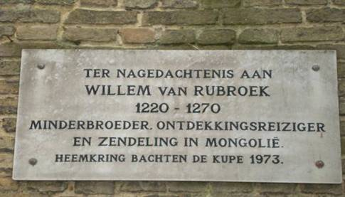
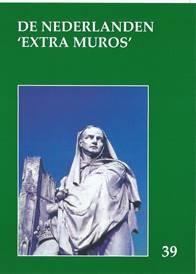
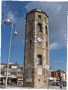
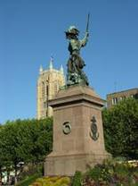
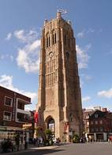
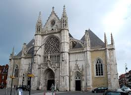
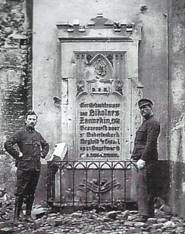

> nieuwsbrief
> 35e jg. - 2e trimester 2017
Gedenkplaat Willem van Rubroek,
halte op onze Studie-uittap van 6 mei
Hernieuwen ledenbijdrage voor 2017
De
penningmeester dankt voor de vlotte wijze waarop gehoor gegeven
werd aan zijn verzoek tot vereffening van de bijdrage voor 2017.
De “nalatigen” tot nog toe – op wiens adresetiket het *-symbool
ontbreekt, vinden andermaal een betaalformulier in bijlage. Even
ter herinnering: de bijdrage voor het in mei 2017 te verschijnen
nieuwe Jaarboek De
Nederlanden ‘extra muros’ en voor de
driemaandelijkse Nieuwsbrief
Zannekin
beloopt 29 €. Vanaf 35 € wordt u met dank als steunend lid
geboekt.
Maakt u bij
voorkeur gebruik van ons ‘Belgische’ zogenaamd ‘Europees’
rekeningnummer iban
BE13 4648 2202 5139 – bic: KREDBEBB waarvan de
rekeningoverzichten ons dagelijks meegedeeld worden.
Studie-uittap 6 mei 2017
Daarover leest u
méér verderop in deze Nieuwsbrief.
Op die tocht doen we ook het geboortedorp aan van onze naamgever
Nicolaas Zannekin, met de naar hem verwijzende gedenksteen aan
de kerk van Lampernisse.
Noteer alvast
ook al de datum van 14 oktober, dag waarop we onze Ontmoetingsdag
plannen in Eupen en onze aandacht zullen richten op de
Oostkantons.
Zannekin-studieuitstap op zaterdag
6 mei 2017
Dagexcursie doorheen de Frans-Vlaamse Westhoek:van Nicolaas Zannekin en Willem van Rubroek tot Wenzel Cobergher
09.45 uur: Samenkomst station nmbs, Colaertplaats te
ieper.
10.00 uur: Busrit vanuit Ieper naar lampernisse (monument/
gedenksteen van Nicolaas Zannekin, kerk, korte comfortpauze).
11.30 uur: Rit naar hondschoote (kerk,
hagenpreken aan het Cloostervelt, windmolens) en vervolgens door
de moeren
(drooggelegd volgens plannen van Wenzel Cobergher) naar duinkerke.
13.15 uur: duinkerke (toren van de
Leughenaer, stadhuis, belfort, Sint-Elooiskerk, monument van Jan
Baert) – middagmaal met Vlaams gerecht.
14.45 uur: Rit naar quaedyper (retabel), rubrouck (beschermd
dorpsgezicht, hulde aan Willem van Rubroek; broxeele (Manneken
Pis). Via arneke
naar cassel
17.00 uur: cassel (aan de voet van
de Casselberg vond in 1328 de veldslag plaats waar Niolaas
Zannekin het tegen de troepen van de Franse koning opnam) –
vijfuurtje aan de Grote Markt .
19.00 uur: Terug in ieper
Deelname: bus, gidsen, morgenpauze,
middagmaal, vijfuurtje, dranken inclusief: leden 55,00 €.;
niet-leden 60,00 €. Aanmelden tot uiterlijk 29
april op het secretariaat, Paddevijverstraat 2, 8900
Ieper – e-post: maurits.cailliau@skynet.be
. Betaling op rekening iban: be13 4648 2202 5139 -
bic: kredbebb t.n.v.
Vereniging/Stichting Zannekin, B.8900 Ieper.
Verderop in deze
Nieuwsbrief alvast
enige info omtrent wat in Duinkerke nader zal toegelicht worden
door onze gidsen Jan van Tongeren en Leo Camerlynck.
Jaarboek De Nederlanden ‘extra muros’ 2018
Ook dit 39e Jaarboek De Nederlanden ‘extra
muros’ brengt weer een rijk palet aan bijdragen over de
randgebieden van onze Lage Landen die deel uitmaken van ons
geschiedkundig erfgoed. En als steeds openen we met de korte
bijdrage die zowat in een notendop het “programma” van Zannekin verwoordt.
Van
dezelfde auteur stamt ook de kortere bijdrage Meer
Standaardtaal in het Frans-Vlaams dan in het West-Vlaams,
dat in zeker opzicht een toelichting vormt op zijn beide
publicaties Nieuw Oud
Vlaams, die op hun beurt een aanvulling vormden op zijn
succesvolle Woordenboek
van het Frans-Vlaams (2005).
In de
beide daaropvolgende bijdragen wordt aandacht besteed aan het
thema dat centraal stond op onze Ontmoetingsdag van 2016 te
Belle: de Beeldenstorm. Vooreerst komt de lezing van Marten
Heida aan bod over De Beeldenstorm: een
gereformeerde invalshoek, waarna de inbreng
van Guido Vandermarliere over de Geuzenliederen
voorgesteld wordt. De lezing van Wido Bourel te Belle zal
opgenomen worden in het jaarboek 2018.
Met In
het randgebied van de Nederlanden. Een
reportage in de Romaanse gouwen brengt Maurits Cailliau
een merkwaardig documentair verslag uit 1944 boven water, waarin
toen vanuit Vlaams-nationalistische hoek met een voor dat
tijdsgewricht opzienbarend verfrissende blik gekeken werd naar
het Nederlandse verleden van onze territoria beneden de
Belgische taalgrens. De toonzetting is van de auteur, de
aangehaalde gegevens stammen van de toenmalige verslaggever
Albert Derbecourt.
Al
evenveel, zo niet nog meer, documentaire waarde bevat het
onderzoek van Ruud Bruijns naar Het bewustzijn van de
Nederlanden en de verloren gebieden in de 18e eeuw.
Surfend doorheen gedigitaliseerde krantenbestanden uit die tijd
kwamen hem tal van onvermoede Heel-Nederlandse getuigenissen
onder ogen, waarbij pertinente aandacht voor de aan Frankrijk
verloren gegane Zuidelijkste Nederlandse gebieden toen nog als
vanzelfsprekend ervaren werd.
Als
scharnier tussen de Zuidelijke en de Oostelijke Nederlanden
fungeert de bijdrage van Herman Vandormael over “Het
wonder van Edingen” – de taalgrens van 1962.
Daarin doet hij verslag over de taal-grensperikelen en
–vervalsingen op de grens tussen Henegouwen en Brabant.
Emile
Smit biedt ons met De Kleefse enclaves in
Gelderland inzicht op de
totstandkoming van de Duits Nederlandse grens in deze contreien.
Tot de herziene grensafbakeningen kwam het in 1816-1817 als
uitloper van wat op het Congres van Wenen bedisseld werd.
Het
Graafschap
Lingen: een tijdelijk stukje Nederland in Duitsland is het
thema dat Zeno Kolks ons dit keer aanreikt. We vernemen meer
over zowel de geschiedenis als de kunstgeschiedenis van dit
gebied en zijn dwarsverbanden met de Nederlanden.
Leo
Camerlynck brengt ons nog een stuk verder oostwaarts met zijn Tijdingen uit Oostland.
Achtereenvolgens komen daarin aan bod: Wilamowice, een Vlaams
dorp in Zuid-Polen, Michael Albert en de Flandrer in
Transsylvanië en de Casselnaar Nicasius Elleboudt, een Vlaamse
kerkleider in Hongarije. Een merkwaardig te noemen drieluik.
Vorig
jaar startte Marten Heida met zijn Oostrand-sprokkels,
zijnde een actualiteitskroniek over wat reilt en zeilt binnen de
Duitse Nederlanden, die in dit jaarboek een logisch vervolg
vindt.
Met de Kroniek en boekbesprekingen
sluiten we traditioneel ons jaarboek af. In dit jaarboek zal men
op pagina 2 tevergeefs zoeken naar het de Zannekin-werking
ondersteunende logo van de Provincie West-Vlaanderen (voorheen
de Vlaamse Overheid). Vanaf 2016 dienen we het immers zonder die
al bij al bescheiden subsidie zien te rooien. Gewraakt werd
daarbij de “bijdragen met een sterk gekleurd taalgebruik” die de
beoordelingscommissie “niet stroken vindt met een
kwaliteitsvolle erfgoedwerking”. We kunnen ons niet ontdoen van
het aanvoelen dat hoe meer “Vlaanderen” zich eigen staatsallures
aanmeet, hoe verder het de Heel-Nederlandse gezichtseinder
afstoot. Een betreurenswaardige evolutie, voorwaar!
Naarmate
het land vrij kwam werd het weer bewoond door mensen uit het
binnenland en wellicht ook door zeevarend volk als Saksen en
Friezen. Sint-Elooi zou hier in de 7e eeuw een kerk gesticht
hebben, maar dat is een vrome leugen, want de heilige stierf in
655 en toen was de streek nog helemaal door water overspoeld.
Als Sint-Elooi de patroonheilige van de kerk geworden is, dan is
dat omdat hij als bekeerder van de streek hoog in aanzien stond.
In de tijd van de Merovingers heette het visssersdorp
Sint-Gillis. De naam ‘Duinkerke’ wordt voor de eerste maal
vermeld in een keure van 27 mei 1067 als ‘Dunkerka’ wat kerk in
de duinen betekent. In 1170 kreeg Duinkerke stadsrechten
toegekend door Filips van den Elzas.
In 994 zou graaf Boudewijn IV Duinkerke
omringd hebben met een muur om het tegen de aanvallen van de
Noormannen te beschermen. Van de latere omwallingen die door
Filips de Stoute werden aangebracht, en die 28 torens telde, is
alleen één toren overgebleven, de 'Leugenaar'. Vanaf zijn
ontstaan tot in de 17e eeuw heeft Duinkerke in al de lotgevallen
van het graafschap Vlaanderen gedeeld. Af en toe werd het
grondgebied enigszins losgemaakt van het gezag van de graaf en
als beloning aan een of andere verdienstelijke landheer gegeven.
Ondertussen was Duinkerke van een
bescheiden vissersdorp uitgegroeid tot een niet onbelangrijke
stad en haven. Door de voorspoed stoutmoediger geworden zochten
de Duinkerkenaars niet alleen hun bestaan in de visserij of de
handel over zee, maar ook in de kaapvaart. De ligging en de
welvaart van deze havenstad wekte de belangstelling van
buitenlandse machten en daardoor werd Duinkerke gedurende enkele
eeuwen een twistappel voor Bourgondië, Frankrijk, Spanje en
Engeland. Zo veroverde Frankrijk op 25 juni 1658 Duinkerke op
Spanje en diezelfde dag nog gaf Lodewijk XIV in hoogsteigen
persoon, in uitvoering van een vooraf gesloten akkoord, de
sleutels af aan een Engelse generaal. Zo was Duinkerke in één
dag het eigendom geweest van drie verschillende mogendheden.
De Franse koning die tot elke prijs
Duinkerke wou bezitten, kocht in 1662 voor 12 miljoen pond de
stad terug. Hij deed zijn intrede in de stad met het vaste
voornemen er te blijven, wat hem ook gelukt is.
Lodewijk
wilde Duinkerke uitbouwen tot een onneembare vesting als
uitgangspunt voor verdere acties in de Nederlanden en op de
Noordzee. Hij hoopte daarbij de strijdlust van de beruchte
kapers te kunnen ombuigen ten voordele van zijn strategie en
tenslotte wilde hij de grondige verfransing van deze op en top
Vlaams gebleven stad. Vauban kreeg de opdracht de stad met
nieuwe versterkingen te omgeven. Hij kon daarbij gebruik maken
van de plannen van de Engelsen die al ten dele uitgevoerd waren.
Omdat de haven binnen de versterkingen lag bleken deze ten
langen leste voor de uitgroei ervan een belemmering te vormen.
Van dit alles is weinig overgebleven omdat in het Verdrag van
Utrecht van 1713 bepaald werd dat, op aandringen van de
Engelsen, de versterkingen afgebroken moesten worden. Alleen
buiten de stad zijn nog enkele forten te vinden die zelfs nog
dienst deden in de omsingeling van 1944!
Jan Bart is de bekendste, maar daarom niet
de eerste van de Duinkerkse kapers. Uit de 14e eeuw al zijn
namen bekend gebleven van grote kaperskapiteinen als Jan
Wouters, Jan Crabbe en Hugo de Grave. De grootste van de
Duinkerkse kapers was wellicht Gerard van Meeckeren, die stierf
in 1562. Ten gevolge vooral van de Franse bezetting trok het
merendeel van de Duinkerkse zeelieden naar Oostende. Met
allerlei dreigingen werd geprobeerd om deze nuttige lieden weer
naar Duinkerke te krijgen. Niet zonder moeite werden ze ingepast
in het Franse opzet. Zo ook Jan Bart, die 4 jaar na de Franse
bezetting als zestienjarige in dienst trad bij de Nederlandse
admiraal Michiel de Ruyter. Pas later kwam hij in Franse dienst,
maar hij kende zo weinig Frans dat hij zijn hele leven lang een
tolk nodig had om zich verstaanbaar te maken.
Belangrijker dan de twee vorige
betrachtingen was het opzet van Lodewijk XIV om van het Vlaamse
Duinkerke een Franstalige stad en een vooruitgeschoven Franse
burcht te maken. Dat was de belangrijkste doelstelling, omdat de
gevolgen ervan tot op onze dagen voortduren.
Zoals hij dat ook elders in de
Zuidelijke Nederlanden deed, beloofde de koning de vrijheden en
privileges van de burgers te eerbiedigen, maar ook hier waren
dat loze woorden. Franse ambtenaren en militairen werden
gestuurd. In 1664 al werd het Frans als alleen geldende taal in
de rechtspraak opgelegd. Heel wat moeilijker was het om de
geestelijkheid in het Franse spoor te krijgen, omdat die
gehoorzaamden aan oversten in de Zuidelijke Nederlanden, de
bisschop van Ieper en de provincialen. Zo bleef het Nederlands
in de kerken en scholen nog lang stand houden. Voor de Franse
Revolutie schreven de Duinkerkenaars nog in het Nederlands en
kenden maar gebrekkig Frans. Ondanks de groeiende druk die deze
Revolutie op taalgebied uitoefende was het volksleven in 1810
nog volledig Nederlandstalig. Uiteindelijk werd de stad vrijwel
volledig opgeslorpt door de verfransing, waarbij deze stad veel
van haar karakter verloor.
Een laatste belangrijke tegenslag was de
Tweede Wereldoorlog, waarbij Duinkerke in 1940 het sluitstuk
werd van het Duitse offensief, waarvoor het de volle tol
betaalde. In 1944 werd Duinkerke terzijde gelaten door de snelle
opmars van de geallieerden naar Antwerpen. De Duitsers konden er
zich ingraven en hielden er stand tot 9 mei 1945! Een en ander
maakte dat Duinkerke voor 85% verwoest achterbleef. Ofschoon de
heropbouw met zorg gebeurde is toch heel wat van het historische
Duinkerke voorgoed verdwenen.
De
Sint-Elooiskerk
Duinkerke
dankt zijn naam aan een kerk die in de 9e eeuw gebouwd werd in
een vissersdorp. Oorspronkelijk stond hier een eerder primitieve
kerk, die vervangen werd door een hallenkerk waarvan de bouw in
1450 begon. Maar 10 jaar vroeger was de bouw van de toren
begonnen. Die diende als baken voor de scheepvaart. De drie
beuken van 20 m hoog waren doorkruist door een transept. Zo had
de kerk de vorm van een kruisbeeld. Aan de westkant, opgenomen
in de voorgevel, rees de 58 m hoge toren, op 50 m van het koor.
De bouwmeesters waren Gentenaren. In 1558 tijdens het beleg van
Duinkerke, dat toen in handen van de Spanjaarden was, staken de
Franse soldaten van maarschalk de Thermes de kerk in brand.
Alleen de toren werd gespaard.
Dit monumentale gebouw werd onmiddellijk
gerestaureerd, in gotisch flamboyante stijl, door Jean de
Renneville. De middelste beuk werd verhoogd en de kerk werd
vergroot door het aanbouwen van een aantal kapellen. Wegens
financiële problemen werd de verbinding tussen kerk en toren
nooit uitgevoerd. De onafgewerkte kerk werd door een 40 meter
lange blinde muur afgesloten. Er was een soort
voet-gangersdoorgang ontstaan in de ruïnes om vanaf het centrum
een kortere weg te hebben naar de haven. Men probeerde geld te
verzamelen door in de kerk doden te begraven: er waren 30.000
graven! De mensen moesten wegblijven uit de kerk wegens de
stank.
Gedurende de Franse Revolutie werd de kerk
achtereenvolgens ziekenhuis, tempel van de godin van de Rede en
graanzolder. Victor
Louis, een 18e-eeuwse Franse architect, verbouwde de kerk
grondig tussen 1783 en 1787. De toren raakte definitief
gescheiden van de kerk. Hij werd later omgevormd tot belfort. De oude voorgevel werd door
een zuilengevel in antieke stijl vervangen. Het gekozen
bouwmateriaal was niet bestand tegen de weersomstandigheden,
waardoor in 1882 afbraak noodzakelijk was. Tussen 1887 en 1889,
ontwierp de architect Van Moë een kerkportaal in neogotische
stijl.
De bombardementen van
1914/1918 beschadigden dit prachtige bouwwerk. De restauratie
duurde tot 1930. Maar in mei 1940 werd de kerk opnieuw een prooi
der vlammen. Vanaf 1947 tot 1985 volgde een nieuwe restauratie.
Die werd uitgevoerd door de Duinkerkse architect Charles Waldschmidt die de kerk in haar oorspronkelijke staat
herstelde. De neogotische voorgevel bleef bewaard. Die
vertoont vele kogelgaten uit de oorlog.
Het graf van de Duinkerkse
held Jan Bart (de
kaper) bevindt zich in het koor sinds hij hier in 1928 opnieuw
begraven werd. De door Philippe Caffieri (1634-1717) gebeitelde
grafsteen uit de 18e eeuw werd in een muur ingewerkt.
Er is een 17e-eeuwse
Nederlandstalige grafsteen van de toenmalige burgemeester van de
stad in de kerk te vinden.
De schilderijen die in de kerk
te vinden zijn werden vooral in de 16e en 17e eeuw gemaakt door
kunstenaars als Jan van Reyn,
Erasmus Quellin, Pieter Pourbus, Kasper de Crayer, Gerard
Honthorst.
_______________
Bron: Nieuwsbrief Davidsfonds
Frans-Vlaanderen, maart 2017.
|
titel |
auteur |
Leden-prijs |
niet-leden |
|
jaarboek
2 tot en met 10 |
5
€ per deel |
7
€per deel |
|
|
jaarboek
11, 12 en 13 |
6
€ per deel |
8
€ per deel |
|
|
jaarboek
16, 19 en 20 |
7
€ per deel |
10
€ per deel€ |
|
|
|
10
€ |
12
€ |
|
|
10
€ |
12
€ |
||
|
Leo
Camerlynck |
5 € |
7
€ |
|
|
Register
jaarboeken 1-10 |
2,5
€ |
3
€ |
|
|
Land
van Kleef, gids |
Wim
en Wiro van Heugten |
10
€ |
14
€ |
|
Laus
Flandriae (tweetalig) |
Jean-Marie
Gantois |
7
€ |
9
€ |
|
jaarboek
26 (2004) |
15 € |
18
€ |
|
|
L.
Camerlynck e.a. |
5 € |
7
€ |
|
|
jaarboek
27 (2005) |
15 € |
18
€ |
|
|
jaarboek 32
(2010) |
20
€ |
25
€ |
|
|
jaarboek 33
(2011) |
20
€ |
25
€ |
|
|
jaarboek 34
(2012) |
29
€ |
34
€ |
|
|
jaarboek 35
(2013) |
29
€ |
34
€ |
|
|
Suid-Afrika
se plek in die Franse Nederlanden |
Leo
Camerlynck |
5
€ |
7
€ |
|
jaarboek 37
(2015) |
|
29
€ |
34
€ |
|
Jaarboek
38 (2016) |
|
29
€ |
34
€ |

Dit Zannekin-monument zullen we op 6
mei spijtig genoeg niet te zien krijgen. Het bevond zich
voor de eerste Wereldoorlog in de kerk van Lampernisse,
die volledig verwoest werd. De tekst luidde als volgt:
DOM. Ter nagedachtenisse van Nicolaes Zannekin,
gesneuveld voor ’s Vaderlandsch Vrijheid te Cassel op 23
Oogstmaand 1328
De huidige
gedenksteen dateert van 1928.
Cyriel
Moeyaert & Mark Ingelaere
Ø De
crypte van de kathedraal van Bonen is hersteld en weer
toegankelijk gemaakt. De oude crypte van de eerste kerk in de
11e eeuw gebouwd door de heilige Ida, gravin van Bonen, ter ere
van O.-L.-Vrouw van Bonen is vrij gaaf bewaard onder de nieuw
kathedraal gebouwd door Haffreingue in het begin van de19e eeuw
en van de nog romaanse zuilen, met hun mooie kapitelen, het
praalgraf van Godfried van Bonen als kopie van het praalgraf in
de H.-Grafkerk in Jerusalem waar hij begraven ligt, alsook een
groot mooi houten beeld van Godelieve van Gistel waarvan het
gezicht jammer genoeg verloren is gegaan.
Ø Van Eric
Duvoskeldt ontving ik een mooi boekje La Crypte waarin ook
andere kunstwerken vermeld worden die in die Boonse crypte te
zien zijn. Het boekje is ook rijkelijk geïllustreerd en bevat
ook wat geschiedenis van de stad Bonen.
Ø van
dezelfde Eric Duvoskeldt ontving ik een ansichtkaart over Bonen
met opmerkelijk genoeg erop een vlaggetje met de Vlaamse Leeuw.
Ø Wat
Godelieve betreft, die nu doorgaans Godeleine genoemd wordt in
Artesië, haar oorspronkelijke naam gegeven bij haar geboorte was
wel degelijk Godelieve en die naam is er ook lang in ere
gehouden. Toevallig ontdek ik de naam Godelieve in een tekst in
Karel de Flous Woordenboek
der toponymie , IIIe deel, kolom 17. De tekst gaat over de
Godelievekapel in Heinfried Wilder (Wierre-Effroy) haar
geboortedorp: “et mesme doit la jeunesse du village dudit Wierre
venir le jour de la Saincte Godeliefve, patronne dudit lieu, et
le jour de Nostre Dame de mi-aoust, chacun an en communaulté
tant filz que filles avec les viollons ou aultres instruments,
demander congé audict sieur de la Chappelle de leurs récréer,
venir et faire leurs frairies, danses et esbats sur la place
ordinaire et accoustumé…” (Boul. 185) XVIe eeuw.
Ø Het
jubileum van de Barmhartigheid 2016 was ook de gelegenheid om
het 150 jarig bestaan van de huidige kathedraal van Bonen te
herdenken in 2015-2016 Er verscheen hiervoor een klein
geïllustreerd gebedenboekje dat vooral gaat over Onze Lieve
Vrouw van Bonen
Ø Op 5
maart overleed de grote Frans-Vlaming Lode Hoex, oud-lid van de
Zuid-Vlaamse Jeugd, vriend van Gantois en Jacques van Belle.
Werkte soms mee aan het tijdschrift Notre Flandre, kende
goed Nederlands. Hij schreef o.m. Runetekens op wederopgebouwde
gevels in Zuid-Vlaanderen na 1919 en 1945. Lode was een intieme
vriend van Jacques van Belle bij wie hij elke week op bezoek
kwam. Later meer over Lode.
Ø Het
Nederlands in Zuid-Komen door de eeuwen heen, is een onderwerp
waarmee ik nu mee bezig ben. Door een huwelijk met de dochter
van de heer van Komen, Jeanne de Wasiers, werd Colaert van de
Clyte heer van Komen. De Clyte (nu de Klijte genoemd) is een
parochie in Reningelst. Later valt de naam Clyte weg en Colaert
en z’n afstammelingen heetten gewoon Heer van Comene. Z’n zoon
Jan van Comene bezat een heerlijkheid in Ruisscheure.
Ø In
Wormhout ontdekte men in de kerk een oude Nederlandse, zwart
marmeren grafsteen van pastoor Mathieu Lambert, (spreek uit
Matieuw) van 1538 tot 1378.De grafsteen vertoont bovenaan Jezus
aan het kruis, Johannes en Maria aan weerszijden en nog twee
andere heiligen; onder het kruis een doodshoofd. De tekst is in
mooie gotische letters gebeeldhouwd en begint met: “Hier legt
begraven… Hij was prochiepape van Wormhout”. Zie Bulletin Comité Flamand de
France, februari 2017, 40.
Ø Mazingarde
vermeldt deze grafsteen in een artikel over de Beeldenstorm
omdat die Lambert pastoor was ten tijde van de Beeldenstorm. Hij
brengt ook de foto van een tekening van de verdwenen grafsteen
van Pieter Pintaflour, geboren in Strazele in ong. 1502,
bisschop van Doornik 1575-1580, die ook leefde in de geuzentijd.
Ø Mazingarbe
brengt ook een foto van het voor kort opgerichte monument op
Sint-Laurens waar de Beelenstorm begonnen is. Hij vermeldt ook
nog drie in Frans-Vlaanderen nagelaten sporen van de
Beeldenstorm en de geuzentijd: de papeput in Rubroek, de
geuzenkapel in Hondschote, de gebrandschilderd ramen in de kerk
van Belle. Ik zou er het klokje van het klooster van
Sint-Laurens aan toevoegen in de kerk van Steenvoorde.
Ø Yser
Hoek, voor het Vlaemsch erfgoed, nr.
100, (Volkerinkhove) brengt als naar gewoonte een paar
Nederlandse bladzijden. Dit keer een opmerkelijk oorspronkelijk
verhaal geschreven over Edouard Leroy uit Merkegem, gestorven in
1937. Hij was zelf herder. “Van schaepen en schaep boeren” heet
het verhaal. Het is het verhaal van een jongen die zelf schapen
kweekt en verzorgt en een grote herder en boer wordt. Het is
geschreven door z’n neef broeder Romain Dumolin, alias R. van de
Meule, bekende Frans-Vlaamse auteur. Twee boeiende foto’s
illustreren het verhaal.
Ø De
Scholengemeenschap, de v.C. Katholieke basisscholen regio
Poperinge slingert zich langs de Franse grens. De scholen van
Westouter, Abele, Watou en Roesbrugge liggen in een grensdorp.
In totaal hebben ze 31 kleuters en leerlingen met de Franse
nationaliteit die in KBRP school lopen. (Roesbrugge 7, Watou 2,
Abele 18 Westouter 4) tot grote tevredenheid van iedereen.
Getuige een video met het verhaal van Adélie (woonachtig in
St.-Omaars) uit de school ‘Kleine Prins Abele’ en een artikel
uit Le journal des
Flandres met een getuigenis van Coralie en Edouard uit
Herzeele die in de De Waaier Watou op school zitten. Zie voor de
video met Adélie: https://www.youtube.com/watch?v=mVmf3CE2g-E
Ø Tot januari 2017 was Eric Vanneufville de
voorzitter van het ‘Huis van het Nederlands’ van Belle. Nu
besteedt hij zijn energie aan zijn eerste passie: de
geschiedenis van de Lage Landen. Hij is ook de initiatiefnemer
van een nieuwe bibliotheek over de geschiedenis van
Frans-Vlaanderen, ook te BelIe.
Ø De Limburger Henri Vaassen is de nieuwe
voorzitter van ‘Het huis van het Nederlands te Belle’. Hij
heeft, samen met Karel Appelmans een nieuwe vereniging opgericht
‘Tweetalig Onderwijs’. De vereniging zou graag tegen september
2017 tweetalig onderwijs organiseren in drie klassen te Belle,
Steenvoorde en Bray-Dunes. Voor dit doel zoekt de vereniging
parttime docenten. In dit
verband is er ook een interessante facebook-pagina bedoeld om de
Vlaams-Franse ouders te informeren over het aanbod van onderwijs
en Nederlandstalige activiteiten voor hun kinderen aan de andere
kant van de grens: https://www.facebook.com/Les-petits-Flamands-de-France-bilingues-1066738193434918/?fref=ts
Ø Inhuldiging
van
een nieuwe bushalte te Wulverdinghe. Michel Thoorens, de
metselaar van Yser-Houck, heeft meerdere bushaltes gebouwd in
het landelijk Frans-Vlaanderen. Gewoonlijk maken de bushaltes
onze dorpen lelijk... Maar dankzij Yser-Houck is dit het
tegendeel! De bushaltes die gebouwd worden in het landelijke
Frans-Vlaanderen vormen een samenvatting van de Vlaamse
landelijke architectuur.
Ø Proficiat
aan
Félix Boutu, voorzitter van Yser-Houck, en aan Michel Kerfyser,
burgemeester van Wulverdinghe. Hij is de laatste burgemeester
van Frankrijk die het Vlaams goed beheerst. Hij en Michel
Thoorens werden geïnterviewd door Mark Ingelaere.
Ø Beide
video's zijn te zien op het Youtube-kanaal: https://www.youtube.com/watch?v=zgQeLovg94A
en op https://www.youtube.com/watch?v=WrA3cgtL2BU
Ø Wat
zouden jullie er van denken een duik te nemen in het hart van
een tijdperk van heldengevechten en legenden. Wenst u de
legendarische Viking Allowyn te ontmoeten nadien Reuze van
Duinkerke geworden en zo de vreselijke veldslagen te herbeleven
tussen Franken en Noormannen. Deze droom wordt werkelijkheid op
het Zannekinfeest op
25, 26 en 27 augustus 2017 in Rekspoede. Een reis in de tijd
waarop de jonge ploeg van de Frans-Vlaame Vereniging Zannekin u
welkom heet.
Ø Op het kerkhof van
Ochtezele werd het grafkruis met de Vlaamse tekst ‘Vrouw Moeder
Marie Spetebrood’ gerestaureerd en terug geplaatst door de
mensen van EUVO. Speciale dank aan Wim Dewit en de technische
school van Lokeren, Oost-Vlaanderen. De
inhuldiging vond plaats op zaterdag 25 maart 2017.
Ø Een
vermeldenswaardige facebookpagina is die van Jerome Schoonaert.
Het is een beetje het equivalent van het forum ‘Frans-Vlaanderen
in het Nederlands’. Er zijn steeds meer interessante commentaren
en discussies onder zijn berichten, meestal over het erfgoed en
de taalproblematiek. De beheerder van deze pagina schrijft in
het Vlaemsch, het Nederlands en het Frans.
Ø De
gemeente Berten is de eerste gemeente die volledig uitgerust is
met tweetalige borden. Tijdens de nieuwjaarsreceptie van de
gemeente kondigde burgemeester Patricia Moone de installatie aan
van veertig panelen in het ‘Vlaemsch’ van straatnamen en namen
van gemeentelijke gebouwen. Een initiatief van ongekende schaal
in Frans-Vlaanderen.
Monument
op
de Casselberg, herinnerend aan de aldaar geleverde
veldslagen, waaronder deze waarbij Nicolaas Zannekin
sneuvelde.
Ook
hier
komen we langs tijdens onze studie-uitstap van 6 mei
Marten Heida
Een welkome handreiking
Als een van huis
uit Friestalige heb ik altijd veel belangstelling gehad voor
alles wat met taal te maken heeft. Ik heb dan ook met meer dan
gewone aandacht kennis genomen van de bijdrage van Wido Bourel
in Histoire de la
Flandre van Eric Vanneufville. In een bestek van welgeteld
28 bladzijden beschrijft hij de "Petite Histoire et Actualité de
la langue des Flamands". Hij begint met er aan te herinneren dat
Frans-Vlaanderen dan wel het land van de Reuzen mag zijn, maar
dat het enkel het "Reuzenlied" is dat verwijst naar het
Nederlandstalige verleden van deze regio. Deze vaststelling is
voor hem aanleiding geweest na te gaan hoe de taalsituatie in
het verleden was. In dit verband passeren figuren als Clovis en
Hugo Capet de revue. En dat betekent dat het al Frans is wat de
klok slaat. Maar Louis de Baecker trok de balans weer in
evenwicht als hij in zijn Les
Flamands de France stelt dat het dan toch maar de
Frans-Vlamingen zijn geweest die de oude taal van de stichters
van de Franse monarchie hebben bewaard. Die oude taal
weerspiegelt zich in de namen die ze aan hun dorpen en steden
hebben gegeven. Ze zijn tot op de dag van vandaag bewaard
gebleven al hebben een aantal wel een Franse "verpakking"
gekregen. Bij een paar volstaat het de Franse klemtoon te
vervangen door de Nederlandse om de oorspronkelijke naam weer te
voorschijn te doen komen. Echter vervreemd als de bevolking is
van het Nederlandse taalverleden van hun streek denken ze dat
hun gewesttaal op zichzelf staat. Het Nederlands wordt door hen
als een vreemde taal beschouwd. Dat is het tragische gevolg van
het feit dat sinds de inpalming van deze regio door Lodewijk XIV
de band met de rest van het taalgebied werd doorgesneden en de
taal ging verarmen.
Het is een goede
gedachte geweest het hoofdstuk over de taalsituatie in
Noord-Frankrijk toe te vertrouwen aan Wido Bourel. Afkomstig als
hij is uit deze streek heeft hij zelf ervaren wat het wil zeggen
tot een taalminderheid te behoren die door de officiële machten
niet of nauwelijks erkend wordt. Hij is er als het ware in
geslaagd naast de huidige Frans-Vlamingen te gaan staan en hen
de weg te wijzen naar een Nederlandstalige toekomst voor zijn
geboortestreek. Terecht stelt hij dan ook dat niet het onderwijs
in de streektaal de voorkeur verdient maar wel deze van de
zogenaamde "vreemde" (= Nederlandse) taal. Het is te hopen dat
door zijn handreiking in Vanneufville's boek de lezers zich
bewust worden van de historische werkelijkheid van hun streek en
als gevolg daarvan de verbondenheid met de andere delen van het
Nederlands taalgebied.
Prins
Willem Alexanderpark 53
NL-3905 CB Veenendaal
De Nederlanden “extra muros”,
bakermat van onze literatuur
Kanttekeningen bij de
Encyclopedie van de Nederlandse literatuur
“Hebban olla
vogalan” zou door een in het Kentse Rochester residerende
monnik uit Sint-Winoksbergen of Sint-Omaars geschreven zijn.
In Luik ontdekt doch stammend uit het Nederrijnland zijn de
Wachtendonckse psalmen. Het oorspronkelijke handschrift van
het Ludwigslied
of de Rithmus
teutonicus werd in de Sint-Amandusabdij van
Saint-Amand-les-Eaux (Elno) bewaard. Henric van Veldeke trad
meermaals op in de Kleefse Zwanenburcht alvorens naar de
Thüringse Unstrutt af te reizen. Philippe de Commynes en
Jehan Froissart behoren tot de eerste kroniekschrijvers
afkomstig respectievelijk uit Ruischeure en Valencijn. En zo
ging het nog eeuwen verder.
In de top tien van de meeste
vertaalde oorspronkelijk in het Nederlands geschreven boeken
prijken twee meesterwerken uit onze Nederlandse literatuur,
namelijk Het Dagboek van
Anna Frank en het Cruydenboeck
van de Mechelaar Rembert Dodoens (16e eeuw).
Voorts is er het levenswerk van
Thomas Haemercken van Kempen, beter bekend als Thomas a Kempis
uit Kempen, nu in het Duitse Nederrijnland. Zijn “De Imitatio
Christi” mag dan wel in het Latijn geschreven zijn, doorspekt
met Nederlandse zinswendingen, het behoort tot onze literatuur
uit de Nederlanden. Zo is er onze dierbare Reinaert de Vos uit het
Zeeuws-Vlaamse Hulst. En we mogen ook niet Tijl Uilenspiegel
vergeten, die Charles de Coster wereldberoemd maakte, zij het in
het Frans geschreven doch in een door en door Vlaamse geest.
Terecht schreef Karel Jonckheere
ooit dat Vlaanderen zo veel te vertellen heeft dat het hiervoor
twee talen nodig heeft.
In ’s werelds top honderd van de
meest gelezen en vertaalde litertuurwerken vinden we een tiental
werken die ontsproten zijn binnen onze te vaak miskende
Nederlanden. Dat is toch iets dat zo maar niet aan de aandacht
voorbijgaat.
De Nederlanden in het algemeen en
Vlaanderen in het bijzonder inspireerden veel schrijvers en
dichters, en niet het minst literatoren, die niet eens het
Nederlands als moedertaal hebben.
Wie kende tot voor kort A Dog of Flanders, een
verhaal over Nello en zijn koehond Patrasje, geschreven door de
19e-eeuwse Engelse schrijfster Ouida, schuilnaam voor
Marie-Louise de la Ramée. Er werden verschillende tekenfilms en
langspeelfilms aan het onderwerp besteed. Japanners en Koreanen
zijn verlekkerd op het verhaal.
Jésus-Christ en Flandre van de Franse romancier Honoré
de Balzac handelt over een veerman uit Cadzand. Het epos is
nauwelijks in Vlaanderen of in de Nederlanden bekend.
Hoe mooi beschreef de in het
Duits schrijvende Tsjech Rainer Maria Rilke niet Brugge en
vooral Veurne.
Hoe diep werd de Vlaamse ziel
niet beschreven in de naturalistische roman Maria, fille de Flandre
van de Frans-Vlaming Maxence van der Meersch.
Hetzelfde geldt voor de Franse Académicienne
Marguerite Cleenewerck de Crayencour, beter bekend als
Marguerite Yourcenar, in o.a. Archives du Nord, L’oeuvre
au noir, Un homme sauvage.
Één eeuw voordien beschreef een
andere grote dame haar geliefde Frans-Vlaamse geboorteland rond
Dowaai (Douai) Marcelline Desbordes-Valmore.
Terug naar de in het Nederlands
geschreven letterkunde. Binnen de Nederlanden, en dan in
hoofdzaak in Vlaanderen, lijkt het erop alsof er buiten een
handvol schrijvers nauwelijks nog waardevolle hanteerders van de
literaire pen leven. Kristien Hemmerechts, Tom Lanoye, Herman
Brusselmans, Dimitri Verhulst, Stefan Hertmans en nog enkele
tijdgenoten krijgen ruimschoots “airplay”. Weinig anderen wordt
dat gegund. Wat de geciteerde schrijvers allen gemeen hebben, is
de soms misprijzende wijze waarop ze op Vlaanderen in het
algemeen en op het volksnationalisme in het bijzonder
neerkijken. En dat geldt ook voor andere kunstbeoefenaars zoals
schilders, beeldhouwers, toneel- en filmspelers, die zich zelf
liever als Belgische dan als Vlaamse artiesten omschrijven. Het
is bij hen vaak bon ton zich af te zetten tegen nostalgie en
traditie.
In Nederland is die koele tendens
of die trend om “cool” te zijn niet zo uitgesproken. Adriaan van
Dis, Connie Palmen, Renate Dorrestein, A.F.Th. van der Heijden,
Joke van Leeuwen, Anna Enquist durven iets meer zichzelf zijn.
En Cees Nooteboom wordt nog steeds geprezen.
Gaan wij opnieuw Ernest Claes,
Felix Timmermans, Cyriel Buysse, Hendrik Conscience, Frederik
van Eeden, Arthur van Schendel, Anne de Vries lezen? - “’t Can
verkeeren”, zei Bredero.
Tot
slot nog even de door de Taalunie gepromote Geschiedenis van de
Nederlandse literatuur, die bestaat uit de volgende delen:
deel
1 (I): Frits van Oostrom, Stemmen op
schrift (Middeleeuwen
I tot 1300). Verschenen: voorjaar 2006.
deel
1 (II): Frits van Oostrom, Wereld in
woorden (1300-1400).
Verschenen: 5 februari 2013.
deel
2: Herman Pleij, Het
gevleugelde woord (Middeleeuwen
II, 15e en 16e eeuw). Verschenen: najaar 2007.
deel
3: Karel Porteman en Mieke Smits-Veldt, Een nieuw
vaderland voor de muzen (1570-1700).
Verschenen: voorjaar 2008.
deel
4 (I): Inger Leemans en Gert-Jan Johannes, Worm en
Donder (1700-1800:
de Republiek). Verschenen: 12 december 2013.
deel
4 (II): Tom Verschaffel, De weg
naar het binnenland (1700-1800:
de Zuidelijke Nederlanden). Verschenen: 10 december 2016.
deel
5: Wim van den Berg en Piet Couttenier, Alles is
taal geworden (1800-1900).
Verschenen: voorjaar 2009
deel
6: Jacqueline Bel, Bloed en
rozen (1900-1945).
Verschenen: 30 november 2015.
deel
7: Hugo Brems, Altijd
weer vogels die nesten beginnen (1945-2005).
Verschenen: voorjaar 2006
deel
8: Anne Marie Musschoot en Arie Jan Gelderblom, Ongeziene
blikken.
Nabeschouwingen bij de reeks. Verschenen: 17 januari 2017.
Alvast
veel leesgenot toegewenst!
Leo
N.J. Camerlynck
“De
Zavelberg”, Edouard Michielsstraat 51
B-
1180 Ukkel (Brussel)
T. +
32 485 630 227
{kind=link}
{kind=link}